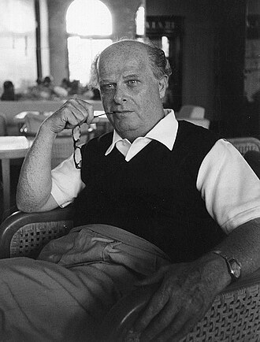
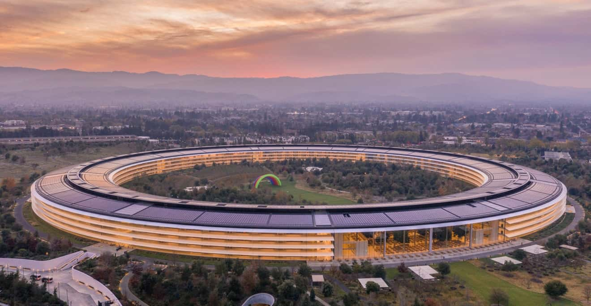
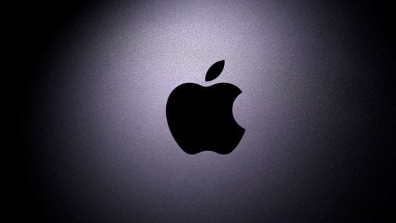

Dalla macchina da scrivere all'intelligenza artificiale
ENTER SYSTEMMacchina universale e base del computer moderno.
Calcolatori elettronici della Seconda Guerra Mondiale.
Uno dei primi personal computer della storia.
Steve Jobs e Wozniak fondano Apple.
Centro mondiale della tecnologia.
Nuova era del digitale.
Italo Calvino riflette sul rapporto tra uomo e tecnologia. Le Cosmicomiche immaginano universi scientifici e futuristici.
Olivetti crea la Programma 101, uno dei primi computer della storia.

Centro mondiale dell’innovazione tecnologica in California.

Apple was founded by Steve Jobs and changed technology forever.

Il Futurismo celebra velocità, energia e progresso tecnologico.